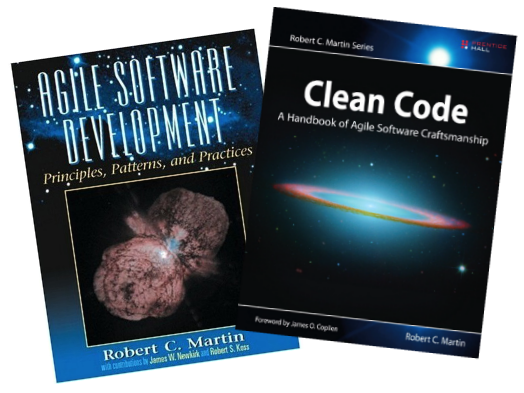
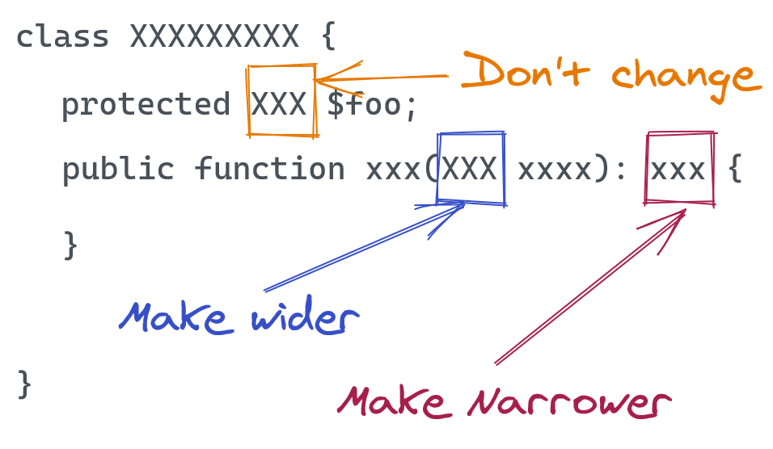

SOLID
A term describing a collection of design principles for good code that was coined by Robert C. Martin also known as Uncle Bob.

Disclaimer
These are principles, not laws!
Single responsibility principle
A class, function, or module should have a single responsibility. They all should have only one reason to change.

If you can think of more than one reason to change a class (or module, or function, or ...), it has multiple responsibilities and thus breaks the principle. A module should be responsible to one, and only one, actor. Do one thing and do it well!
Guideline
Think about what each class (or module, or function, or ...) is supposed to do. Gather together the things that change for the same reasons (put code that different actors depend on into close proximity). Separate those things that change for different reasons (separate the code that different actors depend on).
Example
Introduce a Facade
Move each actor’s needs to own class
Putting the principle into practise
-
Module level
- Group classes based on business domains, features they implement (e.g. vertical slice architecture) or any other logical seperation
-
Class level
- Methods that are of similar nature (change together) are grouped in the same class.
-
Method level
- Make sure that the method is only doing one thing and one thing only. A method that has many paths of execution, has many invocations to other methods is generally an indication that the method is having to many purposes.
Benefits
-
The code is easier to understand
- We spend 90% of our time as software developer reading code, so it’s pretty important to be able to understand it and reason about it very fast. Clear separation means you know where to go when one aspect needs to change. “Fits In My Head“ - Dan North
- The code is easier to test (less test cases)
- The code is less fragile (changes are isolated) and therefore easier to maintain
- The code is more reusable (the code should be reusable without modification)
- The number of merge conflicts is reduced when multiple people are working with the codebase
Examples
How to spot violations
If you describe what a piece of code does with an “AND”, it’s probably violating the principle.
If you’re saying “OR”, it’s even worse, because your code then has responsibilities which aren’t related to each other!
Is this a violation?
%%{init: {'theme': 'dark', 'themeVariables': { 'darkMode': true }}}%%
classDiagram
class Person{
+String name
-save_db()
}
Better?
%%{init: {'theme': 'dark', 'themeVariables': { 'darkMode': true }}}%%
classDiagram
Person <|-- PersonDB
class Person{
+String name
}
class PersonDB{
-save()
}
Is this a violation?
class Burglar:
def __init__(self):
self._artifacts = []
def steal(self, artifact: str):
print("Putting on the invisibility cloak.")
print("Taking the artifact.")
self._artifacts.append(artifact)
print("Removing the invisibility cloak.")
bilbo = Burglar()
bilbo.steal("Arkenstone")
Better
class Burglar:
def __init__(self):
self._artifacts = []
def steal(self, artifact: str):
print("Taking the artifact.")
self._artifacts.append(artifact)
def cloak(self):
print("Putting on the invisibility cloak.")
def remove_cloak(self):
print("Removing the invisibility cloak.")
bilbo = Burglar()
bilbo.cloak()
bilbo.steal("Arkenstone")
bilbo.remove_cloak()
Some signs of violations

-
If-/switch- statements where each case represent one reason to change
- Fix: extract the logic to a separate method or class
-
Monster methods that does more than one thing
- Fix: split it into multiple methods or classes that do just one thing
-
God class that contains everything in a single class
- Fix: split into specialized classes that handle clear use cases
- Multiple unit tests due to multiple execution paths

Classes, modules, or functions should be open for extensibility but closed for modification.
Simply, it means that if your business requirements change you shouldn’t modify the existing code (closed for modifications). Instead, you should add a new code that extends the existing code without affecting it (open for extension).
Example
Generate reports. Supporting XML and HTML reports, but we got a new requirement that PDF version is needed as well.
Naive approach:
if xml:
generate_xml_report
else if html:
generate_html_report
else:
....
To add a PDF version we would have to add a new else if block to the existing code. How can we make this code better? What are the techniques to make this code open for extension and closed for modification?
Guideline
-
How we can extend the functionality?
- Inheritance
- Composition and interfaces
-
Parameters
- Allow client to control behavior specifics via a parameter (passing a state string, etc. and combined with lambdas can be a very powerful approach)
Inheritance
Create a abstract superclass and for the different implementation we create it's child classes which extends the functionality of a superclass (the template method pattern).
Composition and interfaces
Use interface that allow different implementations which we can easily substitute without changing the code.
Allowing behavior to be changed by passing in different objects (strategy pattern, dependency injection).
Program by interface, not by implementation
What this basically means is that you should try to write your code so it uses an abstraction (abstract class or interface) instead of the implementation directly.
Abstraction via inheritance
class Report
@abstractmethod
generate_report()
class PDFReport extends Report
class HTMLReport extends Report
class XMLReport extends Report
...
Abstraction via composition
There is a design pattern that solves this problem and is called Strategy.
class Report
generate_report()
class Strategy:
do_algorithm() // Called from inside the generate_report
class PDFFormatter extends Strategy:
class HTMLFormatter extends Strategy:
class XMLFormatter extends Strategy:
...
report = Report(PDFFormatter())
report.generate_report()
How to extend?
class Logger {
// Concrete function. Does one thing in exactly one way
// If you want to change its functionality, you have to modify it directly.
log() {
console.log('Hi');
}
}
const logger = new Logger();
logger.log();
Function parameters
class Logger {
// Opened for extensions by changing the message
log(message: string) {
console.log(message);
}
}
const logger = new Logger();
logger.log('Hello');
Abstraction via inheritance
class Logger {
log() {
console.log('Hi');
}
}
class AnotherLogger extends Logger {
log() {
console.log('Hi from Another');
}
}
// const logger = new Logger();
const logger = new AnotherLogger();
logger.log();
Abstraction via composition and interfaces
interface ILogger {
log(): void
}
class AnotherLogger implements ILogger {
log() {
console.log('Hi from Another');
}
}
class AnotherElseLogger implements ILogger {
log() {
console.log('Hi from Another Else');
}
}
class Logger implements ILogger {
logger: ILogger;
constructor(logger: AnotherLogger) {
this.logger = logger;
}
log() {
this.logger.log();
}
}
const anotherLogger = new AnotherLogger();
const logger = new Logger(anotherLogger);
// const anotherElseLogger = new AnotherElseLogger();
// const logger = new Logger(anotherElseLogger);
logger.log();
Benefits
- Reduce testing of existing code.
- The less you change the existing code, the less it would introduce new bugs.
- Reduce the cost of a business change requirement.
- The design of a system should be simple and resistant to changes
- Note: but it does not mean that you need to create additional levels of abstraction without the need. Premature optimization can introduce uncessary complexity.
Warning?
Premature optimization can introduce uncessary complexity. If you extend the export class when you have just pdf then we are introducing unnecessary complexity
Examples
How to spot violations
You are violating this principle if you directly work with a concrete implementation instead of an abstraction. The violation becomes visible when you must extend existing code to accommodate new functionality.
Is this a violation?
public class GraphicEditor {
public void drawShape(Shape s) {
if (s.type == 1) {
drawRectangle(s);
} else if (s.type == 2) {
drawCircle(s);
}
public void drawCircle(Circle r) {...}
public void drawRectangle(Rectangle r) {....}
}
public class Shape {
int type;
}
public class Rectangle extends Shape {
public Rectangle() {
super.type = 1;
}
}
public class Circle extends Shape {
public Circle() {
super.type = 2;
}
}
Better?
public class GraphicEditor {
public void drawShape(Shape s) {
s.draw();
}
}
public interface Shape {
public void draw();
}
public class Rectangle implements Shape {
public void draw() {
//draw the rectangle
}
}
public class Circle implements Shape {
public void draw() {
//draw the circle
}
}
public class Oval implements Shape {
public void draw() {
//draw the oval
}
}
Is this a violation?
%%{init: {'theme': 'dark', 'themeVariables': { 'darkMode': true }}}%%
classDiagram
Person <|-- PersonStorage
class Person{
+String name
}
class PersonStorage{
-save_to_database()
-save_to_json()
}
class Person:
def __init__(self, name):
self.name = name
def __repr__(self):
return f'Person(name={self.name})'
class PersonStorage:
def save_to_database(self, person):
print(f'Save the {person} to database')
def save_to_json(self, person):
print(f'Save the {person} to a JSON file')
if __name__ == '__main__':
person = Person('John Doe')
storage = PersonStorage()
storage.save_to_database(person)
Better?
%%{init: {'theme': 'dark', 'themeVariables': { 'darkMode': true }}}%%
classDiagram
Person <-- PersonStorage
PersonStorage <|-- PersonJSON
PersonStorage <|-- PersonDB
class Person{
+String name
}
class PersonStorage{
-save()
}
class PersonJSON{
-save()
}
class PersonDB{
-save()
}
from abc import ABC, abstractmethod
class Person:
def __init__(self, name):
self.name = name
def __repr__(self):
return f'Person(name={self.name})'
class PersonStorage(ABC):
@abstractmethod
def save(self, person):
pass
class PersonDB(PersonStorage):
def save(self, person):
print(f'Save the {person} to database')
class PersonJSON(PersonStorage):
def save(self, person):
print(f'Save the {person} to a JSON file')
if __name__ == '__main__':
person = Person('John Doe')
storage = PersonDB()
storage.save(person)
Is this a violation?
class Payment {
public payWithCash(){
// handle cash pay logic here
public payWithCredit(){
// handle credit pay logic here
}
}
function makePayment(payMethod: string) {
const payment = new Payment();
if(payMethod === 'cash'){
payment.payWithCash();
} else if(payMethod === 'credit'){
payment.payWithCredit();
}
}
Better?
interface PaymentMethod {
pay() : boolean
}
class Cash implements PaymentMethod {
public pay(){
// handle cash pay logic here
}
}
class CreditCard implements PaymentMethod {
public pay(){
// handle credit pay logic here
}
}
function makePayment(payMethod: PaymentMethod) {
if(payMethod.pay()){
return true;
}
return false;
}
Is this a violation?
public class CombinedAreaCalculator
{
public double Area(object[] shapes)
{
double area = 0;
foreach (var shape in shapes)
{
if (shape is Rectangle)
{
Rectangle rectangle = (Rectangle)shape;
area += rectangle.Width * rectangle.Height;
}
if (shape is Circle)
{
Circle circle = (Circle)shape;
area += (circle.Radius * circle.Radius) * Math.PI;
}
}
return area;
}
}
Better?
public class CombinedAreaCalculator
{
public double Area(Shape[] shapes)
{
double area = 0;
foreach (var shape in shapes)
{
area += shape.Area();
}
return area;
}
}
Is this a violation?
for shape in shapes:
if shape == "square":
total_area += area_square(shape);
else if shape == "circle":
total_area += area_circle(shape)
else if shape == "recatangle":
total_area += area_rectangle(shape)
Better?
for shape in shapes: total_area += shape.area()
Is this a violation?
class Orc:
def attack(self, weapon: str) -> None:
if weapon == "sword":
print("The orc swings the sword.")
elif weapon == "bow":
print("The orc shoots an arrow.")
else:
raise ValueError(f"The orc doesn't have a {weapon}")
azog = Orc()
azog.attack("sword")
What if we want the Orc to wield another weapon, we would need to change the attack method?
Better
class Orc:
def attack(self, weapon: Callable) -> None:
weapon()
def sword():
print("The orc swings the sword.")
def bow():
print("The orc shoots an arrow.")
azog = Orc()
azog.attack(sword)
Some signs of violations
- You have private methods that almost do the same thing (save_xml, save_db etc.)
- You use (a lot of) ifs to control behavior e.g. doing something the old way or the new way
- You use an abstract class but check for the concrete implementation to control flow
-
Would most likely have to make modification to existing code if
Design patterns
Template Method Pattern
Create an abstract class containing the base logic, and create implementations of it for different behavior. If you want to add new behavior, you simply create a new class, derive from the base class and add the functionality.

Decorator Pattern
If you want to extend functionality (do the original thing and something extra before and/or after) but not want to change the existing class.

Strategy Design Pattern
One way is to create an interface (or abstract class) for the behavior, implement the interface for a certain behavior and use the interface from the calling class.

The strategy design pattern is a great example that achieves the OCP in an elegant way. It is one of the most useful design patterns.
Let ϕ (x) be a property provable about objects x of type T. Then ϕ (y) should be true for objects y of type S where S is a subtype of T.
In other words, a program should have the ability to replace any instance of a parent class with an instance of one of its child classes without negative side effects.
Main idea
This principles means that ClientClass, which depends on SuperClass, can work seamlessly with instances of both SuperClass and SubClass.

Guideline
-
Software (systems) should be built from interchangeable parts. Those parts should agree on a common contract, which enables those parts to be substituted one for another.
- The contract specifies the parameters, the return type, and what errors might be thrown. And with all of this at hand, you can implement logic that actually handles exactly this => Nothing more, nothing less.
Generic example
The idea behind this principle is that if the hierarchy is correctly implemented (defined by some rules), the client class can work with instances of any of the subclasses without even noticing.
There is a contract between a given type and a client. Subclasses respect the contracts as they are defined by parent (type) classes. The type might be a generic interface definition, REST interface, an abstract class or an interface, not a class with the behavior itself.
Rules
A set of practical rules that must be followed in order to achieve interoperability between the superclass and its subclasses can be found in the aforementioned paper Behavioral Subtyping Using Invariants and Constraints.
This makes sure the callers can expect the sub-classes to behave and interact in the same way the super class does. This means one can substitute an object with an object of a sub-class, and expect it to behave the same way and fulfill its contract.
Some rules
- Subclass method parameter types must match or be more abstract than parent class method parameter types.
- The return type in a method of a subclass must match or be a subtype of the return type of the parent class method.
- A method in a subclass shouldn't throw types of exceptions that the base method isn't expected to throw.
- ...and more
ADD?
https://www.engineerspock.com/2018/12/26/lsp/
In simple words, a client consuming the superclass/interface shouldn’t care about the underneath concrete implementation. In fact, the client should not even know about it. Basically, rather than worrying about the structure of the class, the principle says to enforce a specific behavior to it.
Let’s pretend that we have a client which uses the API of interface B.
To summarize Liskov, suppose we have some type 'B' and a subtype 'A' and 'C'. If some property P is true for 'B', it must be true for 'A' and 'C'.
This means: 'B' defines an API and a public contract - and 'A' and 'C' has to uphold these properties, too!
Benefits
-
Security that an implementation can be replaced without changing its behavior (IS-SUBSTITUTABLE-FOR)
- In the early days to guide the use of subclass inheritance. Now it has turned into a much broader principle that helps define interfaces at the architectural level.
Examples
What is a subtype exactly?
In most object-oriented languages a subtype can either be a class extending another class, or a class implementing an interface.
interface Animal {}
class Cat implements Animal {}
class MaineCoon extends Cat {}
// A class implementing an interface is considered to be a subclass of said interface.
is_subclass_of(Cat::class, Animal::class); // bool(true)
// A class extending another class is a subclass of said parent class.
is_subclass_of(MaineCoon::class, Cat::class); // bool(true)
// By extension, the child class is also considered to be a subclass of the interfaces
// implemented by its parent class.
is_subclass_of(MaineCoon::class, Animal::class); // bool(true)
Defining/implementing interfaces
- Be sure that the names are clear, and it does what it supposes to do
- Error behavior is documented (public API vs comments inside code)
- Make sure that all interactions (also wrong) is understood and tested
How to spot violations?
- Type checking
- Null checks
- NotImplementedExceptions
You can also perform the duck test: If it looks like a duck, quacks like a duck, but needs batteries – you probably have the wrong abstraction.
Is this a violation?
from abc import ABC
class MiddleEarthInhabitant(ABC):
def dance(self):
...
class Human(MiddleEarthInhabitant):
def dance(self):
print("Going wild on the dance floor.")
class Hobbit(MiddleEarthInhabitant):
def dance(self):
print("Look at those big feet go.")
class Party:
def __init__(self, guests: List[MiddleEarthInhabitant]):
self._guests = guests
def que_music(self):
for guest in self._guests:
guest.dance()
Now when we want to create an Orc, which is also a Middle Earth inhabitant, we hit a problem: Orcs are fighters, not dancers.
Better
from abc import ABC
class MiddleEarthInhabitant(ABC):
...
class Dancer(ABC):
def dance(self):
...
class Human(MiddleEarthInhabitant, Dancer):
def dance(self):
print("Going wild on the dance floor.")
class Hobbit(MiddleEarthInhabitant, Dancer):
def dance(self):
print("Look at those big feet go.")
class Party:
def __init__(self, guests: List[Dancer]):
self._guests = guests
def que_music(self):
for guest in self._guests:
guest.dance()
Create a separate interface (abstract base class in Python) and use that to create the party people.
Now we can create an Orc, which still is a MiddleEarthInhabitant, but he doesn’t have to dance.
Is this a violation?
class Duck(ABC):
@abstractmethod
def quack(self):
...
@abstractmethod
def walk(self):
...
@abstractmethod
def fly(self):
...
class RubberDuck(Duck):
def quack(self):
print("Squeek")
def walk(self):
# This method in a sub-class is not implemented according to the expected behavior (refused bequest)
pass
def fly(self):
# This method in a sub-class is not implemented according to the expected behavior (refused bequest)
raise NoFlyException()
Is this a violation?
class Duck(ABC):
@abstractmethod
def quack(self):
...
@abstractmethod
def walk(self):
...
@abstractmethod
def fly(self):
...
class RoboDuck(Duck):
def __init__(self):
self.height = 0
def quack(self):
print("I'm a robot")
def walk(self):
print("Walking")
def fly(self):
# Need to comply with drone regulations and can not fly above 120 meters,
# this is unexpected behavior, since it not expected to land
if self.height > 120:
self.land()
self.height += 1
printf(f"Increased height to {self.height} m")
def land(self):
# This is fine, since it is just added to the class (can be called from outside)
self.height = 0
Is this a violation?
def fly_all_ducks(ducks: List[Duck]) -> None:
for duck in ducks:
if isinstance(duck, (RoboDuck)): # Not RubberDuck
duck.fly()
This also violate the open-close method, since you need to alter this method to add more types.
Is this a violation?
def fly_all_ducks(ducks: List[Duck]) -> None:
for duck in ducks:
fly_operation = getattr(duck, "fly", None):
if callable(fly_operation):
fly_operation()
You might also pass inn something that can fly that is not a duck, e.g. a ball or drone.
Is this a violation?
By using type annotations, throughout our code, and configuring mypy, we can quickly detect some basic errors early, and check basic compliance for free.
class Parent:
def do_something(self, arg: int):
pass
class Child(Parent):
def do_something(self, arg: int, another_arg: int):
pass
// error from mypy static analysis: Signature of "do_something" incompatible with supertype "Parent"
p = Child()
p.do_something(123)
Better?
class Parent:
def do_something(self, arg: int, **kwargs):
pass
class Child(Parent):
def do_something(self, arg: int, **kwargs):
pass
Is this a violation?
class Bird {
fly() {
console.log('I can fly');
}
}
class Duck extends Bird {
quack() {
console.log('I can quack');
}
}
class Penguin extends Bird {
fly() {
throw new Error('Cannot fly')
}
swim() {
console.log('I can swim');
}
}
function makeBirdFly(bird) {
// this function should be able to work on all birds
bird.fly()
}
const duck = new Duck()
const penguin = new Penguin()
makeBirdFly(duck)
makeBirdFly(penguin) // throw an exception
Better?
class FlyingBird {
fly() {
console.log('I can fly');
}
}
class SwimmingBird {
swim() {
console.log('I can swim');
}
}
class Duck extends FlyingBird {
quack() {
console.log('I can quack');
}
}
class Penguin extends SwimmingBird {
}
function makeFlyingBirdFly(bird) {
bird.fly()
}
function makeSwimmingBirdSwim(bird) {
bird.swim()
}
const duck = new Duck()
const penguin = new Penguin()
makeFlyingBirdFly(duck)
makeSwimmingBirdSwim(penguin)
But can't a Duck also swim?
Is this a violation?
from abc import ABC, abstractmethod
class Notification(ABC):
@abstractmethod
def notify(self, message, email):
pass
class Email(Notification):
def notify(self, message, email):
print(f'Send {message} to {email}')
class SMS(Notification):
def notify(self, message, phone):
print(f'Send {message} to {phone}')
Better?
from abc import ABC, abstractmethod
class Notification(ABC):
@abstractmethod
def notify(self, message):
pass
class Email(Notification):
def __init__(self, email):
self.email = email
def notify(self, message):
print(f'Send "{message}" to {self.email}')
class SMS(Notification):
def __init__(self, phone):
self.phone = phone
def notify(self, message):
print(f'Send "{message}" to {self.phone}')
Is this a violation?
class Car
....
def shift_up_gear
# implementation goes here
end
end
class TeslaCar < Car
def shift_up_gear
raise "Not Implemented"
end
end
Some signs of violations
- Empty, do-nothing implementations of one or more methods in subclasses
- Throwing an NotImplemented or some other unexpected exception from a subclass method
-
Conditional logic using the instanceof operator to identify the actual subclass
- Fix: If instead you ensure subclass is in all ways substitutable for superclass, there should be no need to include such a check.
Note
If you don’t use polymorphism, you don’t need to care about this principle.
Tips
- If you don’t need subclassing – don’t use it. Maybe composition instead of inheritance is the solution?
- If you need subclassing you need to design it in a way that doesn’t violate the principle. Again: create stable interfaces.
Warning
Go for composition (has-a relationship) instead of inheritance (is-a relationship), please take a look at these videos here and here

Typescript example
const isEven = (x: number) : boolean => x % 2 == 0;
const isOdd = (x: number) : boolean => x % 2 == 1;
const printFiltered = (arr: number[], filterFunc: (int) => boolean) => {
arr.forEach((item) => {
if (filterFunc(item)) {
console.log(item);
}
})
}
const array = [1, 2, 3, 4, 5, 6];
printFiltered(array, isEven);
printFiltered(array, isOdd);

Comment
In contrast to Liskov, this principle is more of a recommendation.
Clients should not be forced to depend upon the interfaces that they do not use.
Keep your interfaces the smallest you can. No client should be forced to depend on methods it does not use.
Guideline
Do not let interfaces become large in the first place and divide them into many small interfaces beforehand. This allows much more targeted interfaces to be defined externally.
Main idea
Split up your interface into multiple, smaller interfaces that define a specific need or role.
Violations result in classes that depend on things they do not need, increasing coupling and reducing flexibility and maintainability. Breaking down interfaces into smaller pieces makes them easier to implement, and offers more control over who sees what.
Benefits
-
️
- Clients should not be forced to depend on methods they do not use.
- Note: If a class or module is responsible for performing not related tasks, it means that it violates Single Responsibility Principle.
-
Intended to keep a system decoupled and thus easier to refactor, change, and redeploy.
- Note: the original motivation is to avoid unnecessary recompilation
- Developers will have a clear way to use exactly what they need, instead of being forced to interact with functionalities they don’t need.
Examples
How to spot violations
A very common violation of this principle is the partial implementation of interfaces or base class functionality, leaving unimplemented methods or properties to throw an exception (e.g. NotImplementedException).
Is this a violation?
interface Bird {
public function swim();
public function fly();
}
class Duck implements Bird {
public function swim() {/*...*/}
public function fly() {/*...*/}
}
class Penguin implements Bird {
public function swim() {/*...*/}
public function fly() {/* exception */}
}
Better?
interface Bird {
}
interface FlyingBird {
public function fly();
}
interface SwimmingBird {
public function swim();
}
class Duck implements SwimmingBird, FlyingBird {
public function swim() {/*...*/}
public function fly() {/*...*/}
}
class Penguin implements SwimmingBird {
public function swim() {/*...*/}
}
Example
interface Swimming {
fun swim()
}
interface Flying {
fun fly()
}
class Duck : Swimming, Flying {
override fun swim() = println("Duck is swimming")
override fun fly() = println("Duck is flying")
}
class Penguin : Swimming {
override fun swim() = println("Penguin is swimming")
}
Is this a violation?
class Mammals(ABC):
@abstractmethod
def swim() -> bool:
print("Can Swim")
@abstractmethod
def walk() -> bool:
print("Can Walk")
class Human(Mammals):
def swim():
return print("Humans can swim")
def walk():
return print("Humans can walk")
class Whale(Mammals):
def swim():
return print("Whales can swim")
Better?
class Walker(ABC):
@abstractmethod
def walk() -> bool:
return print("Can Walk")
class Swimmer(ABC):
@abstractmethod
def swim() -> bool:
return print("Can Swim")
class Human(Walker, Swimmer):
def walk():
return print("Humans can walk")
def swim():
return print("Humans can swim")
class Whale(Swimmer):
def swim():
return print("Whales can swim")
Some signs of violations
- Unimplemented interface methods.
- A client references a class but uses only a small portion of it.
How to fix
-
A client references a class but uses only a small portion of it.
- If you find yourself depending on a“fat” interface of your own.
- Create a smaller interface with just what you need.
- Reference the new interface with your code.
-
Reference the new interface with your code.
- Create a smaller interface with just what you need.
- Implement this interface using a Facade pattern.
Dependency Inversion Principle
A) High-level modules should not depend upon low-level modules. Both should depend upon abstractions (e.g. interfaces). B) Abstractions should not depend upon details. Details (concrete implementations) should depend upon abstractions (abstract classes or interfaces etc.).
In other words, high-level modules provide complex logic in a system (application), while lower-level modules provide utility features (UI, I/O, network, storage etc.). It is important for high-level modules to be easily reusable and immune to the effects of changes made to lower-level modules.
High vs low level modules
High level modules tell us what the software should do, and low level modules tell us how the software should do various tasks.
Guideline

-
Traditionally: direct dependencies
- What happens if lower level code changes?
- Using dependency inversion: both low-level and high-level classes depends on abstractions. The two will then use this abstraction to communicate and interact amongst each other.
- Note: the abstraction is owned by the high-level module.
Main idea
Depend on abstractions, not on concretions.
-
What the principle has done is:
- 1. Both Object A and Object B now depends on Interface A, the abstraction.
- 2. It inverted the dependency that existed from Object A to Object B into Object B being dependent on the abstraction (Interface A).
Benefits
- Enforce loose coupling and thereby helps make code more robust in face of changes.
- Low-level changes are facilitated (make your code more robust)
- When we modify low-level modules, it should not break the high-level modules.
-
Improves testability
- Easy to swap out implementation when testing (mocking)
- Allows the codebase to be easily expanded and extended with new functionalities
Dependency injection
- Inversion of control: Hollywood Principle: don't call us; we'll call you
- Dependency injection: objects should not instantiate their dependencies, but they should be passed to them
Examples
Without
class Apple:
def eat(self):
print(f"Eating Apple. Transferring {5} units of energy to brain...")
class Chocolate:
def eat(self):
print(f"Eating Chocolate. Transferring {10} units of energy to brain...")
class Robot:
def get_energy(self, eatable: str):
if eatable == "Apple":
apple = Apple()
apple.eat()
elif eatable == "Chocolate":
chocolate = Chocolate()
chocolate.eat()
if __name__ == '__main__':
robot = Robot()
robot.get_energy("Apple")
With
from abc import ABC, abstractmethod
class Eatable(ABC):
@abstractmethod
def eat(self):
return NotImplemented
class Apple(Eatable):
def eat(self):
print(f"Eating Apple. Transferring {5} units of energy to brain...")
class Chocolate(Eatable):
def eat(self):
print(f"Eating Chocolate. Transferring {10} units of energy to brain...")
class Robot:
def get_energy(self, eatable: Eatable):
eatable.eat()
if __name__ == '__main__':
robot = Robot()
robot.get_energy(Apple())
The repository pattern
The principles
| Single responsibility | Don’t mix unrelated responsibilities. Write code that concentrates on doing only one thing. Aim to put related features together, so whenever they tend to change they change for the same reason. |
| Open-closed | When adding new features, avoid doing a lot of changes in the existing code. If you want to change the class behavior then change it using inheritance and composition. |
| Liskov’s substitution | Subtypes must be substitutable for their base types. Interchangeable parts adhere to a contract that allows them to be substituted without the user of the part having to change. |
| Interface Segregation | When using an interface, don’t make me implement methods that don’t make sense. Keep your interfaces super small and compact. Better to write a separate interface for each feature you have in mind. Don't depend on things that you don't use (i.e. only depend on the interface that you need). |
| Dependency Inversion Principle | Depend on abstractions rather than concrete implementations. Use interfaces and abstractions a lot. Higher level modules shouldn’t depend on lower level modules. |
STUPID
singleton invasion, tight coupling, untestability, premature optimization, indescriptive naming and duplication
http://slides.williamdurand.fr/from-stupid-to-solid-code/#/2
References
- Understanding SOLID Principles: Liskov Substitution Principle
- SOLID principles
- Why SOLID principles are still the foundation for modern software architecture
- Open-closed SOLID principle in React
- Open–Closed Principle in Functional TypeScript
- Why apply Open/Closed principles in React component composition?
- Open-Closed Principle: The Hard Parts
- SOLID violations in the wild: The Open/Closed Principle
- How to Write Clean Code (in Python) With SOLID Principles | Principle 2
- SOLID – The Open/Closed Principle
- How to make your Python code maintainable with the open/close principle
- Open-Closed Principle: The Hard Parts
- Applying SOLID principles in React
- Understanding about SOLID - Single Responsibility Principle
- Python Single Responsibility Principle
- Spotting Single Responsibility Violations in Code
- SOLID – The Single-Responsibility Principle